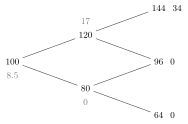

3 The binomial model
No-arbitrage arguments alone give bounds on option prices, not the prices themselves. To compute prices we need a model of how the underlying moves. The binomial model is the simplest one: in each period the stock goes either up or down. Despite — and because of — its simplicity (“extreme complication is contrary to art”, Debussy), it displays every key idea of quantitative finance: arbitrage, hedging, pricing by replication, the risk-neutral probability, martingales, and the optimal exercise of American options. In the limit of many short periods it becomes the Black–Scholes model of Chapter 5.
3.1 The one-period model
Time has two dates: \(t = 0\) (today, when strategies are set up and prices computed) and \(t = 1\) (maturity, when payoffs are received). With a single period the distinction between European and American options disappears.
Two assets are traded:
- a risk-free asset (bank account) with \(B_0 = 1\) and \(B_1 = r_f\), where \(r_f > 0\) is the gross risk-free return over the period;
- a risky asset (stock) with \(S_0 = s > 0\) and \(S_1 = sZ\), where the random return \(Z\) takes the value \(u\) (“up”) with probability \(p_u\) and \(d\) (“down”) with probability \(p_d = 1 - p_u\), with \(d < u\) and \(p_u, p_d > 0\).
A portfolio is a pair \(\theta = (\theta^B, \theta^S) \in \mathbb R^2\) of units of bank account and stock. Its value is \[V_0(\theta) = \theta^B + \theta^S s, \qquad V_1(\theta) = \theta^Br_f + \theta^SsZ = \begin{cases}\theta^Br_f + \theta^Ssu & \text{if } Z = u,\\ \theta^Br_f + \theta^Ssd & \text{if } Z = d.\end{cases}\] \(V_0(\theta)\) is the cost of setting up \(\theta\), \(V_1(\theta)\) its payoff. Allowing any \(\theta \in \mathbb R^2\) means ideal markets: unlimited short selling, perfect liquidity, no transaction costs.
3.1.1 Absence of arbitrage
A portfolio \(\theta\) is an arbitrage if \(V_0(\theta) = 0\), \(\mathbb P(V_1(\theta) \geq 0) = 1\) and \(\mathbb P(V_1(\theta) > 0) > 0\): zero cost, no loss in either scenario, a profit in at least one.
The one-period binomial model is free of arbitrage if and only if \(d < r_f < u\).
Proof. (Necessity.) If \(r_f \leq d\), borrow \(s\) and buy the stock, \(\theta = (-s, 1)\): \(V_0 = 0\) and \(V_1 = s(Z - r_f) \geq s(d - r_f) \geq 0\), strictly positive if \(Z = u\) — an arbitrage. If \(r_f \geq u\), the opposite portfolio \((s, -1)\) is an arbitrage. (Sufficiency.) Let \(d < r_f < u\) and suppose \(\theta\) is an arbitrage. From \(V_0 = 0\), \(\theta^B = -\theta^Ss\), so \(V_1 = \theta^Ss(Z - r_f)\). If \(\theta^S > 0\), then \(V_1 < 0\) when \(Z = d\); if \(\theta^S < 0\), then \(V_1 < 0\) when \(Z = u\); if \(\theta^S = 0\), then \(V_1 = 0\). None is an arbitrage. \(\square\)
Intuition: no asset may dominate the other in both scenarios.
3.1.2 The pricing problem
The only source of randomness is \(Z\), so every derivative has a payoff \(g(Z)\) with \(g : \{u, d\} \to \mathbb R\). Its price at maturity is obviously \(\Pi_1(g) = g(Z)\). What is \(\Pi_0(g)\)?
Let \(s = 100\), \(r_f = 1\), \(u = 1.2\), \(d = 0.8\), \(p_u = 0.6\), and consider a call with strike \(K = 110\): it pays \(10\) if \(Z = u\) and \(0\) if \(Z = d\). The “expected payoff” \(0.6 \times 10 = 6\) looks like a natural price. It is not: sell the call at \(6\), buy \(0.25\) shares and borrow \(19\). The cost is \(-6 + 25 - 19 = 0\), and at maturity \[-(100Z - 110)^+ + 25Z - 19 = \begin{cases} -10 + 30 - 19 = 1 & Z = 1.2,\\ 0 + 20 - 19 = 1 & Z = 0.8 .\end{cases}\] A sure profit of \(1\) from nothing: an arbitrage. The price \(6\) is too high.
3.1.3 Hedging and pricing by replication
Given a payoff \(g(Z)\), find a portfolio \(\theta\) with \(V_1(\theta) = g(Z)\) almost surely, i.e. \[\theta^Br_f + \theta^Ssu = g(u), \qquad \theta^Br_f + \theta^Ssd = g(d).\]
Since \(u \neq d\) the linear system has the unique solution \[\theta^S = \frac{g(u) - g(d)}{s(u - d)}, \qquad \theta^B = \frac{1}{r_f}\,\frac{u\,g(d) - d\,g(u)}{u - d}.\] Every payoff can be replicated: the market is complete.
Under no arbitrage the price of the derivative with payoff \(g(Z)\) is the cost of its hedging portfolio: \[\Pi_0(g) = V_0(\theta) = \frac{1}{r_f}\,\frac{u\,g(d) - d\,g(u)}{u - d} + \frac{g(u) - g(d)}{u - d}.\]
Proof. Derivative and hedge have the same payoff, so this is the law of one price; explicitly, if \(\Pi_0(g) < V_0(\theta)\), buy the derivative, sell \(\theta^S\) shares and invest \(\theta^Ss - \Pi_0(g)\) in the bank. The cost is zero and the payoff is \[g(Z) + \bigl(\theta^Ss - \Pi_0(g)\bigr)r_f - \theta^SsZ = g(Z) - V_1(\theta) + \bigl(V_0(\theta) - \Pi_0(g)\bigr)r_f = \bigl(V_0(\theta) - \Pi_0(g)\bigr)r_f > 0,\] an arbitrage; the reverse inequality is excluded symmetrically. \(\square\)
In the example the formula gives \(\Pi_0 = 5\), the unique arbitrage-free price.
\(\theta^S = \Delta := \frac{g(u) - g(d)}{su - sd}\) is the number of shares that makes the position “short one derivative, long \(\Delta\) shares” riskless: \(\Delta\,sZ - g(Z)\) takes the same value in both scenarios.
\(\Delta\) is the sensitivity of the derivative’s payoff to the underlying — the discrete ancestor of the Black–Scholes delta. Pricing can also be derived from this riskless position: if \(\Delta sZ - g(Z) = c\) for both \(Z\), its value today must be \(c/r_f\), so \(\Pi_0(g) = \Delta s - c/r_f\).
3.1.4 The risk-neutral probability
Rearranging the pricing formula, \[\Pi_0(g) = \frac{1}{r_f}\Bigl(\underbrace{\frac{r_f - d}{u - d}}_{q_u}\,g(u) + \underbrace{\frac{u - r_f}{u - d}}_{q_d}\,g(d)\Bigr).\] Under no arbitrage (\(d < r_f < u\)), \(q_u, q_d > 0\) and \(q_u + q_d = 1\): the pair \(Q = (q_u, q_d)\) is a probability on \(\{Z = u\}\), \(\{Z = d\}\), the risk-neutral probability.
\[\Pi_0(g) = \frac{1}{r_f}\,\mathbb E^Q[g(Z)] = \frac{1}{r_f}\bigl(q_u\,g(u) + q_d\,g(d)\bigr).\]
Remarks that will recur throughout the course:
- The price is a discounted expectation — what a risk-neutral investor would pay — but under an artificial probability \(Q\). The real probabilities \(p_u, p_d\) do not enter: they only affect the expected return, and the hedge removes all risk.
- With \(g(x) = sx\), \(\mathbb E^Q[S_1] = s(q_uu + q_dd) = sr_f\), i.e. \(\frac{S_0}{B_0} = \mathbb E^Q\bigl[\frac{S_1}{B_1}\bigr]\): under \(Q\) the stock earns the risk-free rate on average — no risk premium — and the discounted price has constant expectation (it is a martingale).
- More generally, for any portfolio \(\mathbb E^Q[V_1(\theta)] = \theta^Br_f + \theta^Ss\,\mathbb E^Q[Z] = V_0(\theta)\,r_f\).
With \(s = 100\), \(r_f = 1\), \(u = 1.2\), \(d = 0.8\), \(K = 110\): the hedge is \(\theta^S = \frac{10 - 0}{120 - 80} = \tfrac14\), \(\theta^B = \frac{1.2 \times 0 - 0.8 \times 10}{0.4} = -20\) (check: \(-20 + 30 = 10\) and \(-20 + 20 = 0\)), so \(\Pi_0 = -20 + 25 = 5\). With risk-neutral probabilities \(q_u = \frac{1 - 0.8}{0.4} = \tfrac12 = q_d\), \(\Pi_0 = \tfrac12 \times 10 = 5\). Risk-neutral valuation is more direct but tells nothing about the hedge.
3.2 A general one-period market
The binomial model has two states and two assets. What survives with more of each? Let there be \(N\) assets with prices \(S_0 \in \mathbb R^N\) today, and a finite set of \(M\) states \(\omega_1, \dots, \omega_M\), each with positive probability, in which the assets are worth \(S_1(\omega_j)\). Collect the payoffs in the \(N\times M\) payoff matrix \(D = [S^i_1(\omega_j)]\). Asset \(1\) is the bank account, \(S^1_0 = 1\), \(S^1_1 = r_f\). A portfolio \(h \in \mathbb R^N\) costs \(h\cdot S_0\) and pays \(h^\top D\) (a vector over states).
\(h\) is an arbitrage if \(h\cdot S_0 \leq 0\) and \(h^\top D \geq 0\) with at least one strict inequality. A vector \(\psi \in \mathbb R^M\) with \(\psi_j > 0\) for all \(j\) and \[S_0 = D\,\psi\] is a vector of state prices: \(\psi_j\) is the price today of an elementary (Arrow–Debreu) security paying \(1\) in state \(\omega_j\) and \(0\) otherwise.
The market is free of arbitrage if and only if strictly positive state prices exist. Equivalently, iff there is a probability \(Q\) with \(Q(\omega_j) > 0\) for all \(j\) such that \[S^i_0 = \frac{1}{r_f}\,\mathbb E^Q\bigl[S^i_1\bigr], \qquad i = 1, \dots, N .\]
Proof sketch. (⇐) If \(S_0 = D\psi\) with \(\psi > 0\), any \(h\) with \(h^\top D \geq 0\), not identically zero, has cost \(h\cdot S_0 = (h^\top D)\psi > 0\): no arbitrage. (⇒) No arbitrage says that the linear subspace \(\{(-h\cdot S_0, h^\top D) : h \in \mathbb R^N\} \subset \mathbb R^{1+M}\) meets the positive orthant only at \(0\). A separating-hyperplane argument (Farkas’ lemma) yields a strictly positive vector orthogonal to that subspace, which, normalised, is \((1, \psi)\). Finally, setting \(Q(\omega_j) = r_f\psi_j\): the bank account equation \(1 = r_f\sum_j\psi_j\) shows that \(Q\) is a probability, and \(S_0 = D\psi\) becomes the risk-neutral pricing formula. \(\square\)
Assume no arbitrage. The market is complete — every payoff \(X \in \mathbb R^M\) is the payoff of some portfolio — iff \(\mathrm{rank}(D) = M\), iff the risk-neutral probability \(Q\) is unique.
Completeness means that the rows of \(D\) span \(\mathbb R^M\): one needs at least as many independent assets as states. In the binomial model \(N = M = 2\) and \(D = \begin{pmatrix}r_f & r_f\\ su & sd\end{pmatrix}\) has rank two since \(u \neq d\).
Let \(r_f = 1\), \(S_0 = 100\) and \(S_1 \in \{120, 100, 80\}\). Risk-neutral probabilities must satisfy \(q_u + q_m + q_d = 1\) and \(120q_u + 100q_m + 80q_d = 100\), i.e. \(q_u = q_d\), with \(q_u \in (0, \tfrac12)\): infinitely many. A call with strike \(100\) pays \((20, 0, 0)\) and would be priced \(20q_u\), anywhere in \((0, 10)\). No arbitrage pins down only an interval of prices, whose endpoints are the costs of the cheapest super-replicating and the most expensive sub-replicating portfolios: here buying \(\tfrac12\) share and borrowing \(40\) super-replicates the call (payoff \((20, 10, 0) \geq (20, 0, 0)\)) at cost \(10\). Choosing a single price requires extra criteria (preferences, calibration to other traded options) — the situation of the stochastic volatility models of Chapter 7.
3.3 The multi-period model: a two-period example
Rebalancing over time makes the model both more realistic and dynamic. Take two periods, \(B_t = r_f^t\), \(S_1 = sZ_1\), \(S_2 = S_1Z_2\), with \(Z_1, Z_2\) i.i.d. as before. There are four paths: \(uu\), \(ud\), \(du\), \(dd\) with probabilities \(p_u^2, p_up_d, p_dp_u, p_d^2\); the middle two lead to the same price \(sud\) — the tree recombines.

Figure: stock prices (\(s = 100\), \(u = 1.2\), \(d = 0.8\)) with, in grey, the value of a call with \(K = 110\) at each node (\(r_f = 1\)); terminal payoffs on the right.
A dynamic strategy \(\theta = (\theta_0, \theta_1)\) consists of a portfolio \(\theta_0 = (\theta^B_0, \theta^S_0)\) set up at \(t = 0\) and a portfolio \(\theta_1(Z_1) = (\theta^B_1(Z_1), \theta^S_1(Z_1))\) chosen at \(t = 1\) after observing \(Z_1\). Its values are \(V_0 = \theta^B_0B_0 + \theta^S_0S_0\); \(V_1 = \theta^B_0B_1 + \theta^S_0S_1\) (what the initial portfolio is worth at \(t = 1\)); \(V_{1^+} = \theta^B_1B_1 + \theta^S_1S_1\) (the cost of the rebalanced portfolio); \(V_2 = \theta^B_1B_2 + \theta^S_1S_2\). The strategy is self-financing if \(V_{1^+}(\theta) = V_1(\theta)\): rebalancing neither requires new capital nor withdraws any.
Hedging the call by backward induction. With \(K = 110\) the terminal payoffs are \(34, 0, 0, 0\).
- Node \(S_1 = 120\). Solve \(\theta^B_1 + 144\theta^S_1 = 34\), \(\theta^B_1 + 96\theta^S_1 = 0\): \(\theta^S_1(u) = 0.7083\), \(\theta^B_1(u) = -68\). Value at \(t = 1\): \(-68 + 0.7083 \times 120 = 17\).
- Node \(S_1 = 80\). The call will surely expire worthless: \(\theta_1(d) = (0, 0)\), value \(0\).
- Node \(S_0 = 100\). Self-financing requires \(\theta_0\) to deliver exactly the cost of the rebalanced portfolio: \(\theta^B_0 + 120\theta^S_0 = 17\), \(\theta^B_0 + 80\theta^S_0 = 0\), so \(\theta^S_0 = 0.425\), \(\theta^B_0 = -34\), and \(V_0 = -34 + 42.5 = 8.5\).
Starting with \(8.5\), holding \(0.425\) shares financed by borrowing \(34\), and rebalancing at zero cost at \(t = 1\), we replicate the call payoff in all four scenarios. By no arbitrage the call price is \(\Pi_0 = 8.5\). Risk-neutral valuation gives the same: \(q_u = q_d = \tfrac12\) and \(\Pi_0 = q_u^2 \times 34 = 8.5\).
3.4 The general multi-period model
Let \(B_t = r_f^t\) and \(S_t = s\prod_{i=1}^tZ_i\) for \(t = 0, \dots, N\), with \(Z_1, \dots, Z_N\) i.i.d. taking values \(u > d\) (independence under \(\mathbb P\) is convenient but not essential).
The information available at time \(t\) is generated by \(Z_1, \dots, Z_t\): \(\mathcal F_t = \sigma(Z_1, \dots, Z_t)\), with \(\mathcal F_0\) trivial. The family \(\mathbb F = (\mathcal F_t)_{t=0,\dots,N}\) is increasing (\(\mathcal F_{t-1} \subseteq \mathcal F_t\)): information accumulates. A random variable is \(\mathcal F_t\)-measurable if it is determined by \(Z_1, \dots, Z_t\).
A dynamic strategy \(\theta = (\theta_0, \dots, \theta_{N-1})\) has \(\theta_t = (\theta^B_t, \theta^S_t)\) \(\mathcal F_t\)-measurable (chosen with the information at \(t\), held over \([t, t+1]\)). It is self-financing if \[\theta^B_{t-1}B_t + \theta^S_{t-1}S_t = \theta^B_tB_t + \theta^S_tS_t, \qquad t = 1, \dots, N-1,\] and its value process is \(V_t(\theta) = \theta^B_tB_t + \theta^S_tS_t\) (with \(V_N = \theta^B_{N-1}B_N + \theta^S_{N-1}S_N\)). It is an arbitrage if \(V_0(\theta) = 0\), \(V_N(\theta) \geq 0\) a.s. and \(\mathbb P(V_N(\theta) > 0) > 0\).
The \(N\)-period model is free of arbitrage iff \(d < r_f < u\) — iff every one-period sub-tree is. In that case every payoff \(g(Z_1, \dots, Z_N)\), \(g : \{u, d\}^N \to \mathbb R\), can be replicated by a self-financing strategy, and its arbitrage-free price is \(\Pi_t(g) = V_t(\theta)\).
Construction of the hedge. For a path \((w_1, \dots, w_N) \in \{u, d\}^N\) set \(V_N(w_1, \dots, w_N) = g(w_1, \dots, w_N)\) and, going backwards, for \(t = N-1, \dots, 0\), \[\theta^S_t(w_1, \dots, w_t) = \frac{V_{t+1}(w_1, \dots, w_t, u) - V_{t+1}(w_1, \dots, w_t, d)}{s\prod_{i=1}^tw_i\,(u - d)}, \qquad \theta^B_t(w_1, \dots, w_t) = \frac{1}{r_f^{t+1}}\,\frac{u\,V_{t+1}(\dots, d) - d\,V_{t+1}(\dots, u)}{u - d},\] \[V_t(w_1, \dots, w_t) = \theta^B_tB_t + \theta^S_tS_t .\] By construction \(\theta_t\) depends only on the first \(t\) returns (it is adapted), and one checks directly that \(\theta^B_tB_{t+1} + \theta^S_tS_{t+1} = V_{t+1}(w_1, \dots, w_t, Z_{t+1})\) in both cases \(Z_{t+1} = u, d\): the strategy is self-financing and ends at \(V_N = g\). Each step is a one-period hedging problem.
3.4.1 Risk-neutral valuation and martingales
Let \(q_u = \frac{r_f - d}{u - d}\), \(q_d = \frac{u - r_f}{u - d}\), and let \(Q\) be the probability under which \(Z_1, \dots, Z_N\) are i.i.d. with \(Q(Z_t = u) = q_u\).
Under \(Q\), for every \(t = 0, \dots, N-1\), \[\frac{S_t}{B_t} = \mathbb E^Q\Bigl[\frac{S_{t+1}}{B_{t+1}}\Bigm|\mathcal F_t\Bigr], \qquad \frac{V_t(\theta)}{B_t} = \mathbb E^Q\Bigl[\frac{V_{t+1}(\theta)}{B_{t+1}}\Bigm|\mathcal F_t\Bigr]\] for every self-financing strategy \(\theta\): discounted prices and discounted self-financing portfolios are \(Q\)-martingales.
Proof. \(S_t\) is \(\mathcal F_t\)-measurable and \(Z_{t+1}\) is independent of \(\mathcal F_t\) under \(Q\), so \[\mathbb E^Q[S_{t+1}\mid\mathcal F_t] = S_t\,\mathbb E^Q[Z_{t+1}\mid\mathcal F_t] = S_t\,\mathbb E^Q[Z_{t+1}] = S_t(q_uu + q_dd) = S_tr_f .\] Dividing by \(B_{t+1} = B_tr_f\) gives the first claim. For a portfolio, using that \(\theta^B_t, \theta^S_t\) are \(\mathcal F_t\)-measurable and then self-financing, \[\mathbb E^Q\Bigl[\frac{V_{t+1}}{B_{t+1}}\Bigm|\mathcal F_t\Bigr] = \mathbb E^Q\Bigl[\theta^B_t + \theta^S_t\frac{S_{t+1}}{B_{t+1}}\Bigm|\mathcal F_t\Bigr] = \theta^B_t + \theta^S_t\frac{S_t}{B_t} = \frac{V_t}{B_t}. \qquad\square\]
For every payoff \(g(Z_1, \dots, Z_N)\) and every \(t\), \[\Pi_t(g) = \frac{1}{r_f^{N-t}}\,\mathbb E^Q\bigl[g(Z_1, \dots, Z_N)\bigm|\mathcal F_t\bigr].\]
Proof. Let \(\theta\) replicate \(g\); then \(\Pi_t(g) = V_t(\theta)\), and iterating the martingale property with the tower rule, \[V_t = \frac{1}{r_f}\mathbb E^Q[V_{t+1}\mid\mathcal F_t] = \frac{1}{r_f^2}\mathbb E^Q\bigl[\mathbb E^Q[V_{t+2}\mid\mathcal F_{t+1}]\bigm|\mathcal F_t\bigr] = \dots = \frac{1}{r_f^{N-t}}\mathbb E^Q[V_N\mid\mathcal F_t]. \qquad\square\]
Discrete-time versions of the fundamental theorems of asset pricing are hidden here: no arbitrage ⟺ existence of a probability \(Q\) (equivalent to \(\mathbb P\)) making discounted prices martingales; completeness ⟺ \(Q\) is unique.
3.4.2 Path-independent payoffs
A payoff is path-independent if it depends only on the terminal price \(S_N = s\prod_iZ_i\) — i.e. on the number of up moves, not their order (calls, puts). Otherwise it is path-dependent (Asian, lookback, barrier options). Under \(Q\) the number of up moves is binomial, so for \(g = G(S_N)\) \[\Pi_0(G) = \frac{1}{r_f^N}\sum_{n=0}^N\binom Nn q_u^nq_d^{N-n}\,G\bigl(su^nd^{N-n}\bigr), \qquad \Pi^{\mathrm{Call}}_0(K) = \frac{1}{r_f^N}\sum_{n=0}^N\binom Nn q_u^nq_d^{N-n}\bigl(su^nd^{N-n} - K\bigr)^+ .\] Path-dependent payoffs require working on the full (non-recombining) tree of \(2^N\) paths, or Monte Carlo (Chapter 6).
3.5 Calibration: choosing \(u\) and \(d\)
In practice the maturity \(T\) is split into \(N\) steps of length \(\Delta t = T/N\) (\(N \geq 30\) for a realistic description), with \(r_f = e^{R\Delta t}\) for a continuously compounded rate \(R\). The parameters \(u, d\) are chosen to match the volatility \(\sigma\) of the stock: the standard deviation of the return over \(\Delta t\) should be \(\sigma\sqrt{\Delta t}\), i.e. \[\mathrm{Var}^Q(Z) = \mathbb E^Q[Z^2] - \mathbb E^Q[Z]^2 = q_uu^2 + q_dd^2 - r_f^2 = \sigma^2\Delta t .\] Substituting \(q_u, q_d\) gives \(e^{R\Delta t}(u + d) - ud - e^{2R\Delta t} = \sigma^2\Delta t\). Imposing in addition \(u = 1/d\) (a recombining, symmetric tree), \[e^{R\Delta t}\Bigl(u + \frac1u\Bigr) - 1 - e^{2R\Delta t} = \sigma^2\Delta t .\]
The choice \(u = e^{\sigma\sqrt{\Delta t}}\), \(d = e^{-\sigma\sqrt{\Delta t}}\) solves the calibration equation up to terms of order higher than \(\Delta t\).
Proof. With \(e^x \approx 1 + x + x^2/2\), \(u + 1/u \approx 2 + \sigma^2\Delta t\) and \(e^{2R\Delta t} \approx 1 + 2R\Delta t\). The left side becomes \((1 + R\Delta t)(2 + \sigma^2\Delta t) - 1 - 1 - 2R\Delta t = \sigma^2\Delta t + O(\Delta t^2)\). \(\square\)
The same \(u, d\) also approximately match the volatility under the real-world probability with \(\mathbb E^{\mathbb P}[Z] = e^{\mu\Delta t}\) (exercise): volatility is the same under \(\mathbb P\) and \(Q\), only the drift changes. As \(N \to \infty\) the CRR price of a European call converges to the Black–Scholes price (Chapter 5): by the central limit theorem, \(\log S_N\) becomes Gaussian.
3.6 American options
An American option can be exercised at any \(t \in \{0, \dots, N\}\). At each node the holder compares
- the intrinsic value — the payoff from exercising now, \(g(S_t)\);
- the continuation value — the value of keeping the option alive, \(\frac{1}{r_f}\mathbb E^Q[V_{t+1}\mid\mathcal F_t]\).
The option value is the larger of the two, \[V_t = \max\Bigl(g(S_t),\ \frac{1}{r_f}\bigl(q_uV_{t+1}^{u} + q_dV_{t+1}^{d}\bigr)\Bigr), \qquad V_N = g(S_N),\] and it is optimal to exercise at the first time the continuation value falls below the intrinsic value. The optimal exercise time is random (a stopping time): it depends on the path.
\(s = 100\), \(u = 1.2\), \(d = 0.8\), \(r_f = 1.05\), \(K = 110\), two periods. Exercising gives \(10\) at \(t = 0\); \(0\) at node \(S_1 = 120\) and \(30\) at \(S_1 = 80\); and \(0, 14, 14, 46\) at the terminal nodes.
- Node \(S_1 = 120\). Hedging the terminal payoffs \((0, 14)\): \(\theta^B_1 \times 1.1025 + 144\,\theta^S_1 = 0\), \(\theta^B_1 \times 1.1025 + 96\,\theta^S_1 = 14\), so \(\theta^S_1 = -0.2917\), \(\theta^B_1 = 38.10\), continuation value \(38.10 \times 1.05 - 0.2917 \times 120 = 5\). Intrinsic value \(0\): wait.
- Node \(S_1 = 80\). Hedging \((14, 46)\): \(\theta^S_1 = -1\), \(\theta^B_1 = 99.77\), continuation value \(99.77 \times 1.05 - 80 = 24.76\). Intrinsic value \(30 > 24.76\): exercise.
- Node \(S_0 = 100\). The hedge must deliver \(5\) if up and \(30\) if down: \(\theta^S_0 = -0.625\), \(\theta^B_0 = 76.19\), so \(V_0 = 76.19 - 62.5 = 13.69 > 10\): do not exercise at \(t = 0\).
The arbitrage-free price is \(\Pi^{AP}_0 = 13.69\) (risk-neutral check: \(q_u = \frac{1.05 - 0.8}{0.4} = 0.625\) and \((0.625 \times 5 + 0.375 \times 30)/1.05 = 13.69\)). The optimal exercise time is \(\tau^* = 1\) after a down move and \(\tau^* = 2\) after an up move. The corresponding European put is worth only \(11.82\) (exercise below): the difference, \(1.87\), is the early-exercise premium.
In continuous time the same logic defines, for the American put, a deterministic exercise boundary \(S^*(t)\): it is optimal to exercise as soon as \(S_t \leq S^*(t)\); the boundary increases towards \(K\) as \(t \to T\). The binomial tree remains the standard numerical method to compute it. For calls on non-dividend stocks, the continuation value always exceeds the intrinsic value, in agreement with Chapter 2.
3.7 Exercises
Problems from Hull (H), Chapter 13, and Björk (B), Chapters 2–3. Rates are continuously compounded unless stated.
(H 13.4) \(S_0 = 50\); in 2 months the stock will be \(53\) or \(48\); \(r = 10\%\). Value a 2-month European call with \(K = 49\) by a no-arbitrage (hedging) argument.
Solution. Payoffs \(4\) and \(0\). A position long \(\Delta\) shares and short one call is riskless if \(53\Delta - 4 = 48\Delta\), i.e. \(\Delta = 0.8\), worth \(38.4\) in both states. Its value today is \(38.4e^{-0.1/6} = 37.765\), so \(50 \times 0.8 - c = 37.765\) and \(c = 2.23\). (Check: \(q = (50e^{0.1/6} - 48)/5 = 0.568\) and \(c = e^{-0.1/6}\times0.568\times4 = 2.23\).)
(H 13.9) \(S_0 = 25\); in 2 months the stock will be \(23\) or \(27\); \(r = 10\%\). Value a derivative paying \(S_T^2\) at that time.
Solution. \(q = (25e^{0.1/6} - 23)/4 = 0.6050\). Value \(= e^{-0.1/6}\bigl(0.6050 \times 729 + 0.3950 \times 529\bigr) = 639.26\). Note that \(639.26 > S_0^2 = 625\): by convexity, \(\mathbb E^Q[S_T^2] > (\mathbb E^Q S_T)^2\).
(H 13.1, 13.2) \(S_0 = 100\); over each of two 6-month periods the stock moves up or down by \(10\%\); \(r = 8\%\). Value 1-year European call and put options with \(K = 100\) and verify put–call parity.
Solution. \(q = (e^{0.04} - 0.9)/0.2 = 0.7041\). Terminal prices \(121, 99, 81\). Call: only \(121\) pays \(21\): \(c = e^{-0.08}q^2 \times 21 = 9.61\). Put: \(99\) pays \(1\), \(81\) pays \(19\): \(p = e^{-0.08}\bigl(2q(1-q)\times1 + (1-q)^2\times19\bigr) = 1.92\). Parity: \(c - p = 7.69 = 100 - 100e^{-0.08}\). ✓
(H 13.14) \(S_0 = 140\), \(\sigma = 25\%\), \(r = 4\%\), 3-month steps. Find \(u\), \(d\) and the risk-neutral up-probability of the CRR tree, and value 6-month European call and put options with \(K = 150\) on a two-step tree.
Solution. \(u = e^{0.25\sqrt{0.25}} = 1.1331\) (a \(13.3\%\) rise), \(d = 1/u = 0.8825\) (an \(11.75\%\) fall), \(q = (e^{0.01} - d)/(u - d) = 0.5089\). Terminal prices \(179.76, 140, 109.03\). Call: \(e^{-0.02}q^2(29.76) = 7.56\). Put: \(e^{-0.02}\bigl(2q(1-q)\times10 + (1-q)^2\times40.97\bigr) = 14.58\). Parity check: \(7.56 - 14.58 = 140 - 150e^{-0.02}\). ✓
(H 13.17) \(S_0 = 40\); over each of two 3-month periods the stock moves up or down by \(10\%\); \(r = 12\%\). Value 6-month European and American puts with \(K = 42\).
Solution. \(q = (e^{0.03} - 0.9)/0.2 = 0.6523\). Terminal prices \(48.4, 39.6, 32.4\) with put payoffs \(0, 2.4, 9.6\). European: \(e^{-0.06}\bigl(2q(1-q)\times2.4 + (1-q)^2\times9.6\bigr) = 2.12\). American: at \(S = 44\) continuation \(0.81 > 0\) (wait); at \(S = 36\) continuation \(4.76 <\) exercise value \(6\) (exercise). At the root \(e^{-0.03}(q\times0.81 + (1-q)\times6) = 2.54 > 2\), so wait. The American put is worth \(2.54\); early-exercise premium \(0.42\).
(Adapted from B 2.3) In the two-period example of this chapter (\(s = 100\), \(u = 1.2\), \(d = 0.8\), \(r_f = 1\), call with \(K = 110\)), suppose that at \(t = 1\), after an up move, the call trades at \(20\) instead of its arbitrage-free value \(17\). Construct an arbitrage.
Solution. Sell the call for \(20\) and set up its replicating portfolio from the node \(S_1 = 120\) (\(0.7083\) shares, borrowing \(68\), cost \(17\)), keeping \(3\). At \(t = 2\) the portfolio pays exactly the call’s payoff, so the obligation is covered, and \(3\) is a riskless profit.
(B 3, finite markets) In the trinomial market of the general one-period section, show that the call with strike \(100\) cannot be replicated, and that a put with strike \(100\) (payoff \((0, 0, 20)\)) has arbitrage-free prices in \((0, 10)\). Find the unique price if, in addition, the call trades at \(6\).
Solution. Replicating \((20, 0, 0)\) with bonds and stock requires \(a + 120b = 20\), \(a + 100b = 0\), \(a + 80b = 0\), which is inconsistent: the payoff is not spanned (rank \(D = 2 < 3\)). The put is priced \(20q_d = 20q_u \in (0, 10)\). If the call trades at \(6\), then \(20q_u = 6\) fixes \(q_u = q_d = 0.3\) and \(q_m = 0.4\): the put is worth \(6\) too. With the call added as a third asset the market becomes complete.
(B 2.4) Prove the multi-period risk-neutral valuation formula by induction on the number of periods \(N\), using the one-period result.
Solution. For \(N = 1\) it is the one-period theorem. Suppose it holds for \(N - 1\) periods. Conditionally on \(Z_1\), the remaining problem is an \((N-1)\)-period model, so the value at \(t = 1\) is \(V_1 = r_f^{-(N-1)}\mathbb E^Q[g\mid\mathcal F_1]\), a function of \(Z_1\) only. Pricing this one-period payoff gives \(V_0 = r_f^{-1}\mathbb E^Q[V_1] = r_f^{-N}\mathbb E^Q\bigl[\mathbb E^Q[g\mid\mathcal F_1]\bigr] = r_f^{-N}\mathbb E^Q[g]\) by the tower property.
3.8 Sources
Prof. Fontana, Stochastic Finance slides, Chapter 3 (slides_3), and the handwritten lecture notes of 21 October 2025 (delta hedging, risk-neutral probability, two-period example, self-financing strategies, martingale property, CRR calibration). Björk, Arbitrage Theory in Continuous Time, Chapters 2–3; Turner and Zeindler, Stochastic Finance, Chapters 3–4 (finite market models and the fundamental theorems); Hull, Options, Futures, and Other Derivatives, Chapter 13. Further reading: H. Föllmer and A. Schied, Stochastic Finance: An Introduction in Discrete Time; S. Shreve, Stochastic Calculus for Finance I. Original reference: J. Cox, S. Ross and M. Rubinstein, J. Financial Econ. 7, 229 (1979).